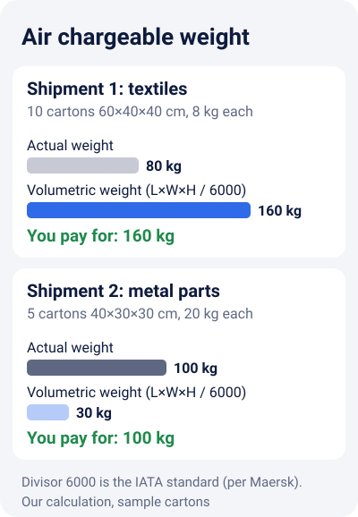
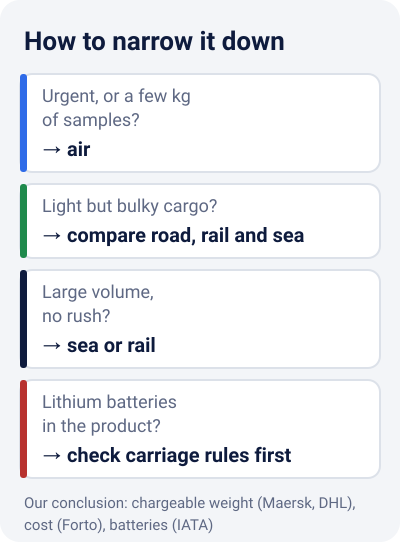

Air, Road, Rail or Sea: How to Choose a Shipping Method from China
Choosing how to ship from China comes down to four questions. When do you need the goods? How much does the shipment weigh, and how much space does it take up? What is the product, and where is it going? In Forto's comparison for the China-Europe lane, air is the fastest and most expensive mode, while sea is the cheapest at scale but slow. Rail falls between the two on cost4.
Weight alone does not set the price. With air freight you pay for whichever is higher: actual weight or volumetric weight1. Below we go through transit times, work through an example and list what to send for an accurate quote. If you'd rather not do the maths yourself, send us a request and we'll find a route for your cargo.
Four shipping methods: transit times and typical use
The table shows our minimum transit times. The actual time depends on the route, the cargo and how customs clearance is handled.
| Method | FBL Group minimum transit time | Best for |
|---|---|---|
| Air | from 1 day | urgent, small and high-value cargo |
| Road | from 14 days | a balance of time and cost on overland routes |
| Rail | from 30 days | large shipments that need an overland route |
| Sea | from 30 days | large volumes and heavy cargo when cost matters more than speed |
Our minimum times for rail and sea are the same, so the choice between them comes down to the route, the cargo and the price. A "from" time is a lower bound, not a promise. We cover why transit times slip and how to build in a buffer in our article on why China shipments get delayed.
How air freight chargeable weight works
Air freight is billed on chargeable weight, which is the higher of two figures: actual gross weight or volumetric weight1. This is how carriers account for cargo that is light but takes up a lot of space on the aircraft1.
Volumetric weight is length × width × height in centimetres, divided by 60001. The 6000 divisor is the IATA industry standard, but some carriers divide by 5000, which makes bulky cargo more expensive1. Express carriers have their own formulas for small parcels1. So it is worth confirming the formula with your carrier up front.
Example. Say you have two shipments. We ran them through the formula above:
| Shipment | Actual weight | Volumetric weight | Air chargeable weight |
|---|---|---|---|
| 10 cartons 60 × 40 × 40 cm, 8 kg each (e.g. textiles) | 80 kg | 160 kg | 160 kg |
| 5 cartons 40 × 30 × 30 cm, 20 kg each (e.g. metal parts) | 100 kg | 30 kg | 100 kg |
The first shipment is lighter, yet by air it is billed as 160 kg because it takes up almost a cubic metre. The second is heavier but compact, so you pay for its actual weight. The more space a shipment takes up relative to its weight, the further its air chargeable weight pulls ahead of its actual weight. So light, bulky goods are cheaper to send by other modes, and air is best saved for small, dense, urgent cargo.

Packing tightly, with no empty space, lowers volumetric weight, and combining small shipments into one cuts wasted space and cost1. That is why we consolidate goods from different suppliers at our warehouse and ship them as one consignment.
Sea freight: LCL or a full container
If your cargo won't fill a container, it ships as LCL (less than container load) and shares a container with other shippers' goods. LCL is priced by weight in metric tons and by volume in cubic metres, and you pay for whichever is larger2. In practice, volume is usually the larger figure2.
In our example, the first shipment takes up 0.96 m³ and weighs 0.08 t, so it is charged on volume. The second takes up 0.18 m³ and weighs 0.1 t, so it is charged on volume too.
On top of the freight itself, an LCL invoice includes local charges at origin and destination. These are also based on the weight or volume of your cargo2. You may be charged extra if the goods are non-stackable or classed as dangerous goods2.
On almost every trade lane, LCL costs far less than air freight, especially for high-volume cargo2. A full container (FCL) is not always the better deal. According to DHL, LCL is very likely to cost less than FCL when three conditions are met. The volume is under 20 m³, there are direct LCL services on the lane, and the cargo is packed to sea freight requirements2.
Batteries and other dangerous goods
Lithium batteries can be shipped by air, but with restrictions. What matters is how the battery travels: on its own, packed with a device, or installed in one. Its watt-hour rating (for rechargeable batteries) or lithium content (for non-rechargeable ones) matters too3. IATA sets out the rules for this cargo in its battery guidance documents3.
If your product has a battery inside, for example in electronics, toys or tools, tell your forwarder before they prepare a quote. This determines whether the shipment can go by air and which documents you will need. With LCL sea freight, dangerous goods can also attract a surcharge2.
How to choose: three situations
These are illustrative examples rather than ready-made answers. The final choice depends on a quote for your specific cargo.
- Samples before a bulk order, a few kilograms. Speed matters more than cost, and the chargeable weight is low. This usually means air.
- Seasonal stock for a marketplace, a mid-sized shipment. Timing matters, but flying the whole lot is expensive. If there is an overland route to you, compare road and rail, and send the portion you need first by air.
- Furniture or a large order, no rush. The cargo is bulky and heavy, and cost matters more than speed. Compare sea and rail, and LCL against a full container.

Before the goods ship, it is worth checking the shipment itself: quantity, defects and packaging. We explain how that works in our article on pre-shipment inspection in China.
What to send for a shipping quote
For a quote that matches the final invoice, send your forwarder:
- What the product is and what it is made of.
- The gross weight of the whole shipment.
- The number of cartons and the dimensions of each in centimetres.
- Whether the product contains batteries, liquids or magnets.
- The pickup address in China and the delivery destination.
- The date you need the goods by.
- Which format you need: cargo service (the carrier handles clearance) or shipping with full customs clearance.
If you haven't bought the goods yet and are still deciding who to work with in China, see our article on sourcing agents, buyers and trading companies.
How FBL Group ships
We ship by air, road, rail and sea. We receive goods from your suppliers at our warehouse in China, consolidate orders from different suppliers into one shipment, pack and label them, and prepare the documents. We offer both cargo service and shipping with full customs clearance. We can inspect the goods at our warehouse or at the supplier's premises.
You'll find more on routes and formats on our shipping from China page.
In short
- Choose based on your deadline, weight and volume, product type and destination.
- Air is usually the fastest and most expensive, sea is cheaper at scale and slower, and rail sits between them on cost.
- Air freight is billed on the higher of actual and volumetric weight: length × width × height in centimetres, divided by 6000.
- LCL sea freight is billed on the larger of cubic metres and metric tons.
- If your product contains batteries, say so before you get a quote.
To get a quote for your cargo, send us a request.
This article is for general information and is not legal advice. Transit times and costs for any specific shipment depend on the cargo, the route and the carrier's rules.
How FBL Group can help
- Sourcing in China — we find the product and supplier, negotiate and purchase the order.
- Manufacturing in China — from a sample, photo or spec, including private label.
- Quality inspection — at our warehouse or on site at the supplier, with photos and video.
- Shipping from China — air, truck, rail or sea, cargo service or customs-cleared.
Read next
Sources
- Maersk. Air cargo chargeable weight calculation explained, 10 March 2025.
- DHL Global Forwarding. What Are the Cost Drivers of Less Than Container Load Ocean Shipping?
- IATA. Batteries, rules for carrying batteries by air.
- Forto. Shipping from China to Europe in 2026: comparing sea, rail and air freight, updated 7 October 2026.
Links checked on 23 November 2026. This article is general guidance, not legal advice.